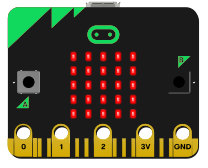
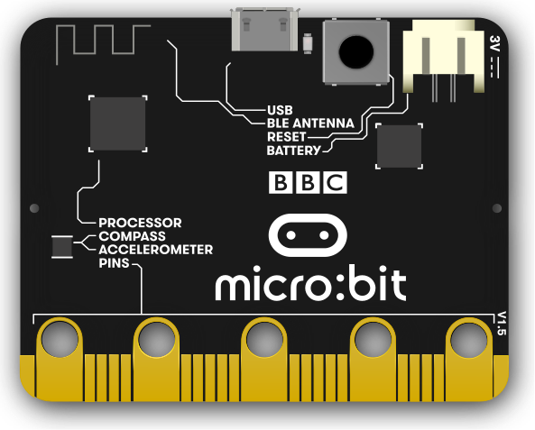

kRDM
Mot de passe
composants
Le micro:bit est un petit ordinateur de carte unique (SBC - Single Board Computer) conçu pour l'éducation et la création de projets électroniques. Il a été développé par la BBC (British Broadcasting Corporation) en partenariat avec plusieurs autres organisations, dans le but de promouvoir l'apprentissage de la programmation et de l'informatique chez les jeunes.

Vidéo explicative de la construction du circuit avec le code.
© 2023 Groupe kRDM. Tout droits réservés.